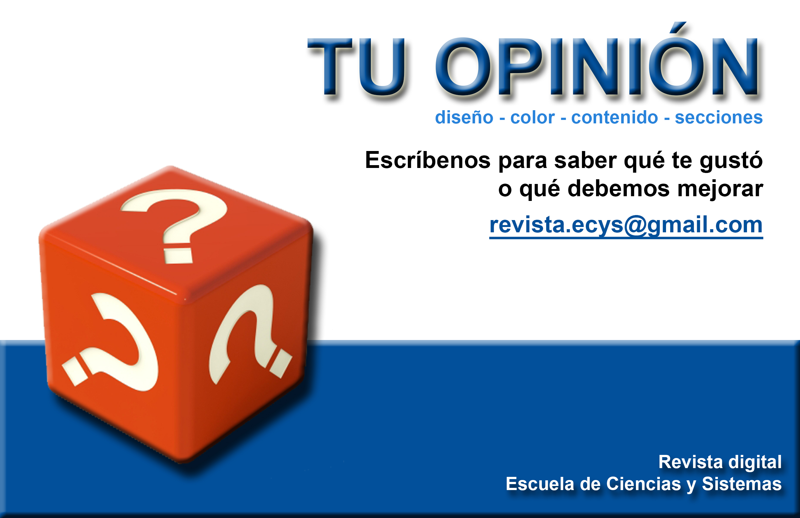

1 Las TICS y el A, B, C
1.2 Artículo
El sistema de educación de Guatemala es una de las debilidades que tiene un precio muy alto para nuestra nación. Empezando por las dificultades que presentan los infantes para asistir a la escuela, un entorno hostil y no apto para el desenvolvimiento académico. Otra razón es la temprana edad de deserciones académicas en la población por distintas razones en la mayoría la económica. De esta manera empieza un duro y largo camino para un potencial estudiante que en su lucha por subsistir en una sociedad con falta de desarrollo y oportunidades.
En esta era donde la comunicación es más fácil por el internet, se exigen cambios en el entorno escolar. Las TIC ofrecen potentes posibilidades de innovación metodológica para lograr un sistema educativo más eficaz y competitivo, igualdad en la instrucción, ejercicio de la enseñanza, aprendizaje de calidad y el desarrollo profesional de los docentes, promueve una mejor gestión, dirección y administración del sistema educativo
La UNESCO aplica una estrategía amplia e integral en la promoción de las TIC. Como principales problemas en este tema se abordan: acceso, integración y calidad en la educación; abordándolos mediante la labor conjunta de sus tres sectores: Comunicación e Información, Educación y Ciencias. La red mundial de oficinas, institutos y asociados de la UNESCO facilita los recursos para elaborar políticas, estrategias y actividades relativas al uso de las TIC en la educación. El Instituto de la UNESCO para la utilización de las Tecnologías de la Información en la Educación (ITIE), con sede en Moscú, se especializa en el intercambio de información, investigación y capacitación con miras a integrar las TIC en la enseñanza.
España en 2010 se convierte en uno de los países más desarrollado de Europa en lo que a tecnología educativa se refiere. En Gran Bretaña es donde más se ha apostado por llevar a cabo una evolución en su sistema educativo mediante las nuevas tecnologías han logrado que casi todas sus aulas consten de una pantalla interactiva.
En América Latina en países como Argentina, Chile, Brasil se llevan a cabo políticas para impulsar la implementación de tecnologías en el sistema educativo.
En Guatemala el ente encargado de gestionar el sistema educativo ha hecho poco o nada para involucrar las TIC en el sistema de aprendizaje. Afortunadamente existen fundaciones y organizaciones empresariales que buscan incorporar la tecnología en los procesos de enseñanza aprendizaje en la primaria a nivel nacional. Su colaboración empieza a impactar en la reducción de la brecha digital, sobre todo en algunas áreas del interior del país, algunas son:
Fundación Sergio Paiz Andrade (FUNSEPA) que se dedica plenamente a la implementación de tecnología en las aulas y capacitación a docentes. Fuente: Funsepa
Fundación Carlos F. Novell proporciona ayuda para el desarrollo de las comunidades través de distintos programas, algunos de estos incluyen directamente al mejoramiento del nivel educativo pero enfocándose más en modelos tradicionales de estudio. Cuenta con un programa de tecnología en el aula que capacita a docentes y alumnos en cursos de mantenimiento y reparación de computadoras, así como de electrónica con el fin de que aprendan un oficio práctico. Fuente: Fundación Carlos Novella
Aulas Fundación Telefónica. Apoya con aulas totalmenteequipadas con equipo de computo asi como capacitaciones a los docentes para que hagan de las TICS una potente herramienta para la enseñanza. Fuente: Telefonica
Figura 1.1: En la ilustración una comunidad rural apoyada por FUNSEPA, Aldea Pujujil II, Sololá Mayo 2011.
- Fundación TIGO que cuenta con varios programas para mejorar la calidad de vida de la población. Destacan los ambiciosos programas educativos como lo son Escuelas digitales, Escuelas de Milenio, Escuelas ABC, Escuelas ABC/Digitales. Fuente: TIGO
FUNDAMENTOS PARA EMPLEAR LAS TIC EN EDUCACIÓN
Alfabetización digital de los alumnos: significa que deben adquirir las competencias básicas en el uso de alguna tecnología, como el uso de equipos y programas de acuerdo a su escolaridad para aplicarlo en su vida cotidiana.
Productividad: Aprovechar las actividades, apuntes y ejercicios, buscar información, comunicación (email), difundir información (weblogs, web de centro y docentes), gestión de biblioteca.
Alfabetización digital de de docentes e innovar en las prácticas docentes: Aprovechar las nuevas posibilidades didácticas que ofrecen las TIC logrando que los alumnos realicen un mejor aprendizaje y reduciendo el fracaso escolar.
¿QUÉ SE ESPERA EN LOS PRÓXIMOS AÑOS?
Crear políticas que sugieran el aprendizaje a través de medios móviles. El aprendizaje móvil: ofrece métodos modernos de apoyo al proceso de aprendizaje mediante el uso de instrumentos móviles como los ordenadores portátiles, tabletas, y teléfonos inteligentes (smartphone). El aprendizaje móvil se está convirtiendo en una de las soluciones a los problemas que afronta el sector educativo. La UNESCO esta basándose en iniciativas conjuntas encaminadas a estudiar de qué manera las tecnologías móviles pueden apoyar la Educación para Todos (EPT).
¿CÓMO PODEMOS APOYAR?
Se puede apoyar aportando equipo de cómputo a organizaciones y mano de obra para su mantenimiento lo que ayudara a la alfabetización digital.
Nuestra Escuela de Sistemas tiene un gran potencial por medio de los estudiantes y catedráticos pudiendo apoyar en la implementación del documento de “Estándares de competencia en TIC para docentes“, creando el manual que ocupe los 3 procesos:
- Nociones básicas TIC: Para educar al docente en conceptos básicos de computación.
- Profundidad en el conocimiento: Esta parte permitirá aplicar a situaciones reales el uso de tecnologías aprendidas, beneficiándose de las nuevas herramientas y conocimientos adquiridos.
- Generación de conocimiento: Pondrá a prueba al docente en el dominio de lo aprendido ya que él debe proponer y solucionar algún problema.
Figura 1.2: Capacitación a docentes por parte de capacitadora de FUNSEPA, Chimaltenango Enero 2013
Figura 1.3: Entrega de Escula ABC/Digital en Santa Rosa, Marzo de 2014. Fundación TIGO
1.3 Conclusiones
- En Guatemala podemos utilizar las tecnologías en la educación separando el problema en dos partes. Haciendo llegar la educación por lo menos a nivel primario a toda la población guatemalteca, esto significaría reducir enormemente el analfabetismo. La segunda parte es dar un trabajo y mejoramiento continuo al docente por medio de proyectos y políticas que incorporen tecnología en las aulas.
- Afortunadamente contamos con una gran cantidad de tecnologías nuestra disposición para erradicar el analfabetismo, el problema es encontrar interesados en comprometerse con proyectos para solucionarlo, las que hoy apoyan no pueden cubrir toda la demanda de ayuda.
- Las organizaciones intermediarias no lucrativas están limitadas por los recursos para proveer de tecnología y capacitaciones a las escuelas, el sector privado encuentra esto como una obra social de beneficio para el país, pero se necesita más apoyo del sector privado ya que es el principal proveedor de los fondos, así también del gobierno ya que si este promueve reformas educativas prometedoras.
Figura 1.4: Aula de fundación telefónica, Solola Marzo 2012Enero 2013
1.4 Referencias
- [1] UNESCO http://www.unesco.org
- [2] Empresarios por la Educación http://www.empresariosporlaeducacion.org
